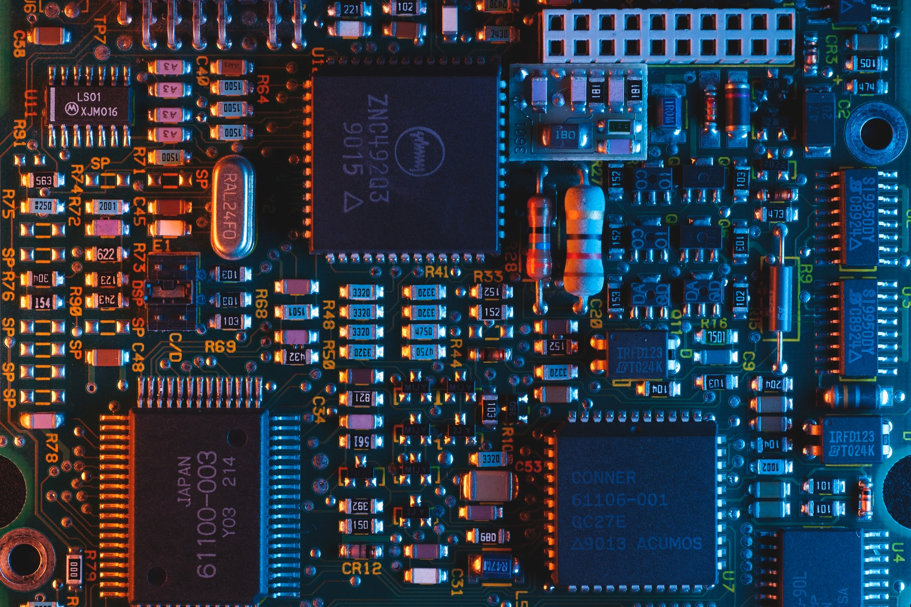
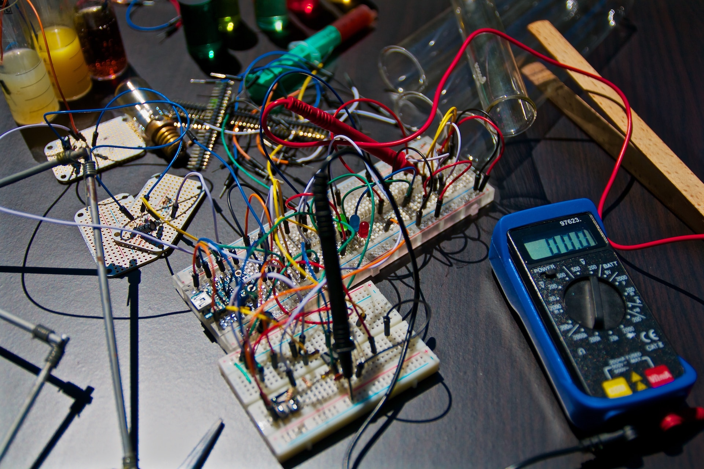

Presentazione

Sono uno studente che dopo il diploma in informatica ha deciso di iscriversi alla facoltà di Ingegneria Elettronica.
Come sviluppatore software ho acquisito esperienza sviluppando software in C/C++, Java, Python e PHP usando anche database MySQL. Ho inoltre dimestichezza nell'uso dei principali linguaggi del web (HTML, CSS e JavaScript) ed esperienza nella programmazione di PLC Siemens mediante software TIA Portal.
Ho conoscenze nel settore dell'elettronica e dell'elettrotecnica maturate mediante la consultazione e lo studio di guide e pubblicazioni specialistiche del settore sia in italiano che in inglese ed esperienze dirette nella progettazione e nella realizzazione di impianti elettrici e di circuiti elettronici sia analogici che digitali.
Ho inoltre esperienze nell'ambito sistemistico acquisite mediante la simulazione e la realizzazione di reti di telecomunicazione cablate e wireless sia in ambito aziendale che in ambito domestico.
Lavoro

Competenze lavorative
- Competenze organizzative: capacità di lavorare in multitasking. Competenze di analisi e risoluzione di problemi. Capacità di pensiero creativo, con l'abilità di individuare nuovi modi per risolvere i problemi.
- Competenze comunicative e interpersonali: abilità nella mediazione e nella risoluzione di problemi. Efficacia nella comunicazione tramite canali digitali come live chat, messaggistica ed e-mail. Collaboratore efficace e capace di contribuire ai progetti di gruppo. Comunicatore flessibile, in grado di adattare il proprio stile in base alle esigenze degli altri. Capacità di ascolto con attenzione ai dettagli.
- Competenze professionali: capacità di lavorare sia in autonomia che all'interno di un team. Orientato agli obiettivi e ai risultati. Fortemente motivato ed osservatore.
Esperienze lavorative
- Sviluppatore web e consulenza informatica freelance: sviluppo di siti web, app e web app, assistenza e consulenza informatica, progettazione e realizzazione di reti di telecomunicazione.
- Sviluppo di app Android e WebApp (esperienza PCTO): studio di nuove soluzioni per la gestione remota di macchine industriali con soluzioni moderne, efficaci ed Open Source. Sviluppo di app Android.
- Progetto Lazzaro (esperienza PCTO): il progetto Lazzaro ha come fine il recupero di computer dismessi che sono stati da noi aggiustati e riadattati per poter essere usati nelle scuole elementari e medie per allestire laboratori informatici consentendo un notevole risparmio economico e una considerevole riduzione dei rifuiti tecnologici che si sarebbero altrimenti venuti a creare se questi PC fossero stati gettati via. In questo progetto è stato usato esclusivamente software Open Source gratuito per promuovere, tra le altre cose, anche l'importanza della collaborazione nella realizzazione di progetti.
Progetti personali

- Programmazione per Arduino: scrittura di alcuni programmi per Arduino. Realizzazione soluzione software e progettazione del circuito hardware da utilizzare.
- Collaborazione nello sviluppo e manutenzione di software Open Source: apertura di Issue per segnalare problemi da risolvere e realizzazione di Pull Request per proporre possibili soluzioni oltre che miglioramenti. Scrittura di commenti volti alla risoluzione di problemi riscontrati da me oppure segnalati da altre persone.
- Sito web dell'artista Gianni Trainini: creazione, aggiornamento, ampliamento e manutenzione del nuovo sito web dedicato all'artista Gianni Trainini.
- Realizzazione di video su YouTube: riprese, editing e caricamento di video da me realizzati sul mio canale YouTube.